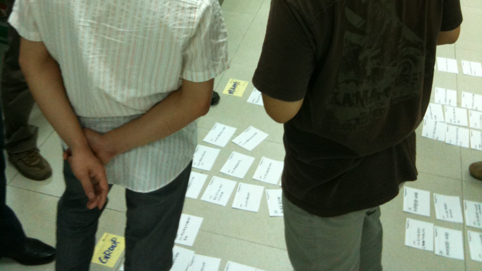
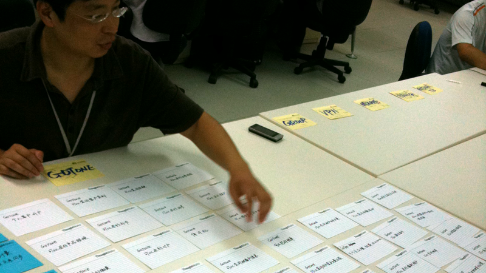
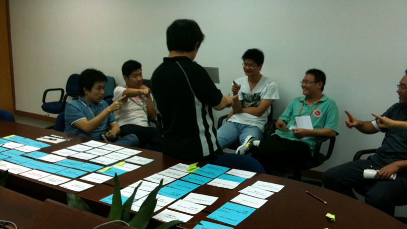

让我们推动大铁球
老王是一个典型的H人－充满激情和执行力极强，他忧虑地跟我说：“这个项目就像一个大铁球，人人都知道很重，但是光滑的表面让所有人不知如何使劲”。我的回复是：“你需要一个敏捷里的项目启动”。
这样的项目都有一个类似的特征：一个被拍脑袋的，谁也不知道能不能完成的结束日期；一堆还未明确的需求；一群缺乏计划的开发人员；和一个必须看到团队至少应该干点什么的项目经理。以往的项目开始也许是当项目不得不开始的时候，大家停止争吵说：好吧，一起开始。可能事情不如我相信的那样悲观，但是在上线前几天没人知道团队到底能做到什么程度，应该是确定的。
于是，敏捷项目启动的关键在于确定项目范围，围绕在这个周围的是：故事拆分、优先级、工作量、和迭代计划。
故事拆分
首先，让我们一起拆分故事。需求在初期一定是不明确的，为了把需求不明确造成的返工浪费减到最小，我们把一个大需求根据业务场景拆分成若干用户故事，也许只是一个标题而已。标题的格式最好采用“XXX可以XXX”这样业务语言的格式，例如“营业员可以查看客户订购的服务列表”，而不是“客户订购关系列表”这样功能语言的格式。业务语言而不是功能语言可以制造一种业务价值导向的开发氛围，努力杜绝做“不增加价值”的事情。此外，还有很多必要的技术任务被识别出来。这样我们就得到一个包含各种用户故事和技术任务的列表。

（图中大家把拆分好的卡片放在了地上进行讨论，因为没有足够大的桌子）
值得提出的一点，容易产生混淆的是“分拆用户故事”和“分拆技术功能点”的区别。传统思维中，需求被拆分成许多独立功能点，每个功能点可能在多个业务场景下被用到，我们认为把这样重复使用的功能点或模块单独进行开发，可以减少工作量，考虑也更加周全（单个功能在多个业务场景下可能有不同），是一种非常高效，且理所当然的工作模式。这样做的结果是，到项目开始后的很长时间，都不能完成一个较为完整的业务场景（每个场景可能都开始，但都是零散的功能点）。这里便是规模生产和精益单件流生产模式的本质不同，关于此点我将另在文章中解释，此处不赘述。
排优先级
当我们有足够的故事卡片被拆分出来，为了让核心团队对整个项目交付计划有个初步的感觉，我们把卡片平铺在一张大桌子上，分成三个区域“基础”、“提升”和“特殊”。每个区域的分别含义是：
- 基础：核心的技术任务和最基本业务流程框架中的用户故事，拿开户业务为例，“可以开户”就是一个基础用户故事；
- 提升：在基础的用户故事上进行提升的特性，例如“在开户时可以看到可用号码列表”就是一个提升型用户故事——开户是基础特性，可用手机号码的选择可以先采用手工输入方式；
- 特殊：一些非必要的，满足客户更细化的要求，例如“在开户时可以看到带8的可选号码列表”就是一个特殊型用户故事——这样的需求相对独立，不影响业务主场景的实现；

（图中一位朴实的大叔正在和大家一起排优先级）
从软件开发层次上考虑这三个等级便是：Usable(可用的)、Useful(好用的)和Engaged(信赖的)。
我们需要做的事情是把拆分好的卡片放进相应的区间里，目的是在后阶段实践中，我们尽量把时间花在第一个区间“基础”的卡片上，对于后两个区间的卡片，尽量不要陷入到细节的争论中去。
估计工作量
往往出现的情况是我们忽视真正需要进行代码开发的人对工作量的估计——某个拥有权威和经验的系统专家给出一个让开发团队敢怒不敢言的工作量，经常让开发进度陷入不可控的艰难境地。工作量的估计是为了设置一个合适的迭代工作量目标，不要过大，也不要过小。注意我们只能知道昨天的天气，迭代能完成的量不是恒定，在迭代正式开始后，需要根据上一迭代的情况进行调整。
估算工作量的方法是召集5到7个开发人员在一起（最好是单数），围绕在一个需求人员的周围；需求人员邀请开发人员在桌上的卡片中挑选出一个可以被认为是基准工作量的卡片，不要过大，也不要过小，我们的经验是一对Pair在10个小时能够完成的用户故事（包含测试）。
当找到这个基准点之后，我们要做的是由需求人员对每张卡片进行讲解，具体描述这张卡实现之后，作为用户我可以做的1，2，3点，目的是让开发人员了解范围。基于这个范围，需求人员可以鼓励开发人员提问，当遇到当时无法澄清的问题时，由需求人员把这个问题转化假设写在卡片上，让开发人员基于假设进行估算。
估算值的大小采用费贝纳切数列1，2，3，5，8，13+，注意有三点：
这里只有层级的概念，而没有倍数的关系，2点的故事不代表工作量两倍于1点的故事；而是只要认为这个故事大于基准故事卡而小于一个3点的故事卡时，那么这个故事的点数就是2。所以在一开始如果发现有一张卡片远远高于当前被估算最小点数的卡片，可是暂时不估，等待一个最相似工作量的卡片被估计出来继续；
原则上不应该出现8个点以上的故事，如果出现，那么证明这个故事应该被拆分。这样的故事可以被估计为13+，之后由需求人员继续拆分；
对于不能估计的故事，打上问号，由需求人员之后澄清后再进行补充；
Mike Cohn发明了用卡片游戏进行估计的方法，考虑到成本较高，我们采用“猜拳法”。当大家已经明确卡片里的内容后，由需求人员喊：1，2，3！开发人员按照自己的想法用手指把点数表达出来，出拳之前大家不要商量，不要影响别人的判断，像杀人游戏里投票的规则一样“不能跟票”。规则是：
－ 重大差异双方PK后重新出拳：如果结果相差两个数量级，比如1和5，双方进行PK，让大家充分考虑不同意见，然后重新出拳；
－ 少数服从多数：如果出现相差不大的情况，少数服从多数，有特别需要提出的，可以给予机会提出，酌情考虑重新出拳；
－ 平票估多不估少：如果出现平票，比如3个3，3个5（因此尽量避免偶数人参加）时，按照估算量大的来算；

（大家在进行工作量猜拳，这个故事卡大家觉得都不大）
需求人员要作为主持人控制整个工作量预估的节奏，防止过度陷入细节，酌情给予重新出拳的机会。
注意，工作量点数应该写在卡片背面。
迭代计划
迭代计划首先需要明白的是到底整个团队能够在一个迭代里交付多少。我们的实践是，把之前准备的卡打散，由需求人员对核心开发人员（参加估计工作量的）说：“既然大家都已经完成了工作量预估，也对需求有了大致的了解，那么大家看一看估计两周的时间里，我们团队能差不多做些什么东西？请在这些卡里挑”。
这里需要注意的是，如果团队是新建团队，大家对团队能力没有一个经验的参考，可以让大家选择自己估计能在两周内完成卡片，之后的规则也基本类似。
这样的挑卡活动大概进行6到8轮，每轮都把卡片重新洗过，由需求人员记录每轮收集卡片的总工作量（这也是为什么把工作量放在卡后，这样可避免开发人员有意识地挑选工作量大或小的卡片），然后除以轮数，得到一个大概的团队单迭代（两周）最大交付能力的数字。
因为永远只能看到昨天的天气，这个数字一定是不准确的，它将会在两周后根据第一迭代的交付情况进行适当的调整。
至此，我们已经得到了一个团队极限交付能力值，假设这个值是30。那么接下来要做的事情便是设计迭代计划。
迭代计划需要考虑的两个进入标准是：
- 优先安排技术风险较大的技术任务在刚开始的迭代；
- 每个迭代的一系列故事聚合在一起应该有一个明确的业务目标，体现一种明确的业务场景，而不是零零散散的功能点；
我们做的实践是给需求人员和核心团队与团队极限交付能力相等数量的“筹码”（我喜欢使用曲别针），我们的例子里是30个。把30个筹码按照上述的进入标准，分别放与工作量相等数量的曲别针在卡上。当30个全部用完，那么第一迭代的故事卡片就被确定。接下来是第2个迭代的需求，以同样的方法，直到所有卡片被排完。注意越到后面迭代的卡片越不准确，因此可酌情考虑只做迭代1，2的计划。
（这是一个被放在某个迭代里的Story，上面有5个曲别针，代表5个点）
到此为止，我们至少直到了迭代1和迭代2计划安排的工作内容，接下来的工作便是按照迭代泳道把这些卡片贴在墙上，当第一个迭代需求分析完毕后，全体开发人员进行Kickoff会议，快速开始迭代。